CDP Inspector - User Guide
CDP Inspector launches and remotely controls Chrome tabs over the Chrome DevTools Protocol (CDP) - screencast, send raw CDP commands, inspect live network traffic, emulate devices and locations, and run JavaScript on a page you don't have local access to. This guide documents every control in the UI, plus practical automation and AI use cases, with screenshots of the real thing.
Overview
CDP Inspector is a two-part tool. The popup (click the toolbar icon) generates a ready-to-run Chrome launch command with remote debugging enabled, then lists every debuggable tab on that instance - and lets you open new ones. The inspector panel (opened by attaching to a tab) connects directly to that tab's CDP WebSocket for a live screencast, a raw CDP command sender, one-click presets for common actions, and a dedicated Network tab that captures every HTTP(S) request the page makes.
Because every Chrome instance it launches is a throwaway, isolated profile, it also doubles as a sandbox for AI agents to drive and debug real applications - see AI & automation use cases below.
Watch the intro video below for a quick tour before diving into the details.

Opens on YouTube in a new tab: youtube.com/watch?v=mhRdHetgKIE
Installation
Install CDP Inspector from the Chrome Web Store:
Quick start
- Open the extension popup and click Generate new (or use the auto-generated command).
- Copy the command and run it in a terminal - it launches a separate, isolated Chrome instance with remote debugging turned on.
- Back in the popup, click Connect on the debugging port, then Fetch tabs.
- Click the attach (plug) icon on any tab card to open the inspector panel.
The rest of this guide covers the popup and the inspector panel in full detail.
The popup
Launch command generator
The popup builds the Chrome command line for you - picking a random debugging port (9000–9999)
and an isolated profile directory so it never collides with your everyday browser session. It
detects your OS automatically via navigator.platform, but you can switch between
Windows, macOS, and Linux manually with the segmented control at the top; each OS remembers its
own binary path and custom-argument choices independently.
- Headless (on by default) - appends
--headless=new, so the launched Chrome has no visible window. - %random% - when on, the profile directory uses the shell's own random-value syntax (
%random%on Windows,$RANDOMon macOS/Linux) instead of a value generated once by the extension, so re-running the exact same copied command in a loop gets a fresh profile dir each time. - Generate new - rolls a fresh random port and profile ID immediately.
- The copy button copies the command to your clipboard with a checkmark confirmation; a small banner below reminds you to periodically clear out
cdp_inspector/webprofilesto free disk space.
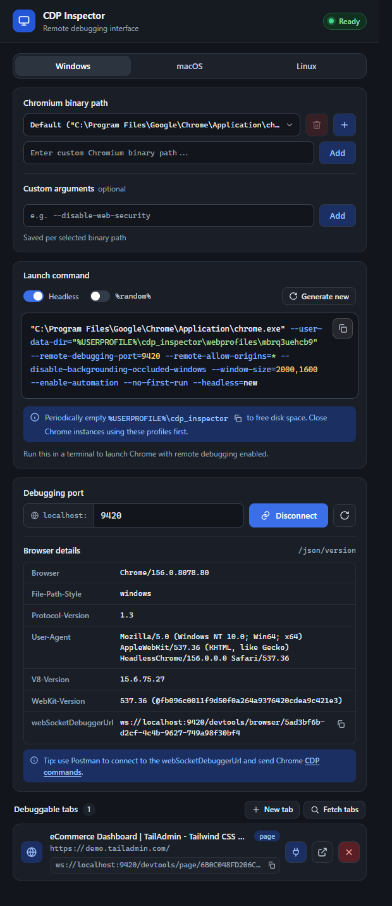
Chromium binary path & custom arguments
Every OS ships with a sensible default Chrome path pre-selected (shown as "Default (…)" in the dropdown), but you can point the generator at any other Chromium-based build.
- Click the + button to reveal a text field, paste or type a binary path, and click Add (or press Enter) - paths that aren't already quoted get wrapped in double quotes automatically.
- The dropdown remembers every custom path you add, per OS. Switching the OS selector swaps the whole list.
- The trash icon removes the currently-selected custom path (after a confirmation prompt) - it's disabled whenever the default path is selected, since that one can't be removed.
- Custom arguments (e.g.
--disable-web-security) are scoped to whichever binary path is currently selected, not the OS as a whole - so a "debug build" path can carry different flags than your default one. Each argument becomes a removable chip; add as many as you need.
Connect & discover tabs
Once the generated (or your own) Chrome instance is running, enter its debugging port and click
Connect. The popup polls /json/version on that port and shows the
browser's details - version, user agent, and its own webSocketDebuggerUrl for the
browser-level CDP endpoint. Click Fetch tabs to (re-)list every debuggable page or
iframe currently open in that instance - other target types (service workers, extension
background pages, etc.) are filtered out.
- The port field remembers your last 5 distinct ports and offers them as an autocomplete dropdown - click into the field to see them, or start typing to filter. Arrow keys move the highlight, Enter selects the highlighted port (or connects, if nothing's highlighted), Escape closes the list.
- Ctrl+R (Cmd+R on Mac) anywhere in the popup re-runs the connect flow for whatever port is currently set - a quick "reconnect" shortcut, same as the circular-arrow button next to Connect.
- While connected, the popup health-checks the port every 5 seconds in the background. If the remote instance becomes unreachable, the status flips to "Disconnected" and the New-tab button hides - but the tab list and connection aren't automatically torn down; only an explicit Disconnect click resets everything.
-
If you had an active connection the last time you closed the popup, it's restored automatically
- opening the popup silently re-attempts
connect()on launch.
Each tab card shows its title, URL, type (page/iframe), and CDP
WebSocket URL (with its own copy button), plus three action buttons - see
Tab card actions below.
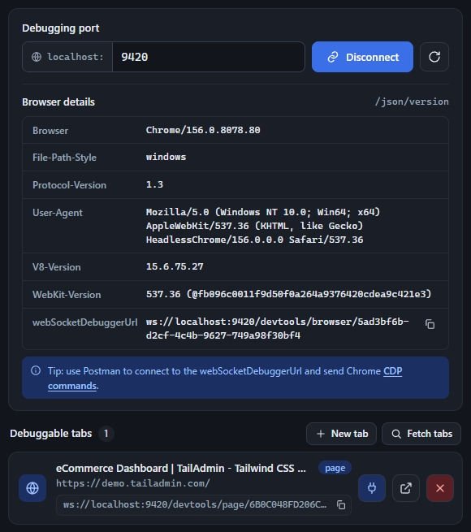
Creating new tabs
The New tab button (next to Fetch tabs, only visible once connected) opens an inline form with a single URL field and a Create button - no separate dialog, no page reload.
- Leave the field blank and click Create (or press Enter) to open a blank tab (
about:blank) in the remote instance. - Type a URL and the same button opens that page instead. You don't need to type the scheme - if you leave it off,
https://is prepended automatically (so typingexample.com/pricingopenshttps://example.com/pricing). - On success, the form closes and the tab list refreshes immediately, so the new tab appears in Debuggable tabs ready to attach to.
- If tab creation fails (bad port, extension error, etc.), an inline error message appears under the field instead of a popup alert.
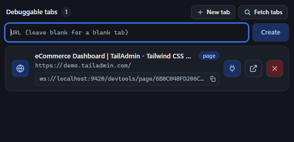
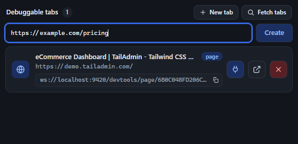
Tab card actions
Every tab card in the list has three buttons, left to right:
-
Attach via CDP (plug icon) - brings that tab to the front in the remote
instance, then opens CDP Inspector's own inspector panel (
attach.html) in a new tab of your local browser, pre-wired to that target's CDP WebSocket. This is the extension's custom UI - see The inspector panel. -
Open DevTools (external-link icon) - opens the real, full Chrome DevTools
frontend (served by the remote instance itself at
/devtools/inspector.html) against that tab, in a normal new tab of your local browser. Use this when you want the actual DevTools Elements/Sources/Performance panels rather than CDP Inspector's own UI. - Close tab (red X) - closes that tab in the remote instance and refreshes the list. The button disables itself while the request is in flight.
Both "Attach via CDP" and "Open DevTools" open in your own, local browser - not inside the remote throwaway instance.
The inspector panel
Clicking the attach button opens the inspector panel (attach.html) as a new tab,
connected directly to the target tab's CDP WebSocket. The header shows the connected tab's title
and URL, the debugging port, and a live attached/disconnected status. Below it, a ready-to-paste
prompt points an AI coding agent at this exact tab's CDP endpoint for automated debugging - the
starting point for every use case in AI & automation use cases.
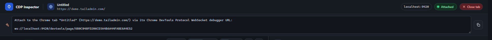
Below the header, the panel splits into two halves: a live screencast of the page on the left, and three tabs - Message, Presets, and Network - on the right.
Resizing the split
Drag the thin handle between the two halves to resize (clamped between 28%–72%); with it focused,
←/→ nudge the split in 2% steps. Below roughly 900px of
window width, the handle disappears and the layout stacks into a single column instead.
Screencast & remote control
The screencast streams the target page live via Page.startScreencast. It's fully
interactive, not just a view - clicks, drags, scrolls, and keystrokes are translated into real CDP
input events and dispatched to the remote page:
- Pause / Live - stop and resume the frame stream.
- Mouse / Touch - choose which input events clicks and drags on the screencast dispatch to the remote page. Touch mode simulates a single synthetic touch point.
- Fit / 100% - scale the screencast to fit the pane or show it at native resolution (coordinate mapping adjusts accordingly, including scroll offset in 100% mode).
- Address bar - navigate the remote page directly, with back/forward/refresh wired to its real navigation history (not just browser-local history).
- Coordinates readout (crosshair icon) - toggles a live "x: _ y: _ · eventType" display of the last input event sent.
- Screenshot button (camera icon) - saves the current frame as a JPEG.
A few details worth knowing: keyboard input is forwarded only while your mouse is
hovering the screencast (not on click-to-focus) - a green ring appears around the frame
while it's capturing keystrokes. Right-clicking sends a real right-click to the page instead of
opening your browser's own context menu. Native <select> dropdowns are
specially handled: since OS-native popups can't be screen-captured, clicking one opens a
custom-rendered replica of its options positioned over the real element, and your selection is
written back into the actual page.
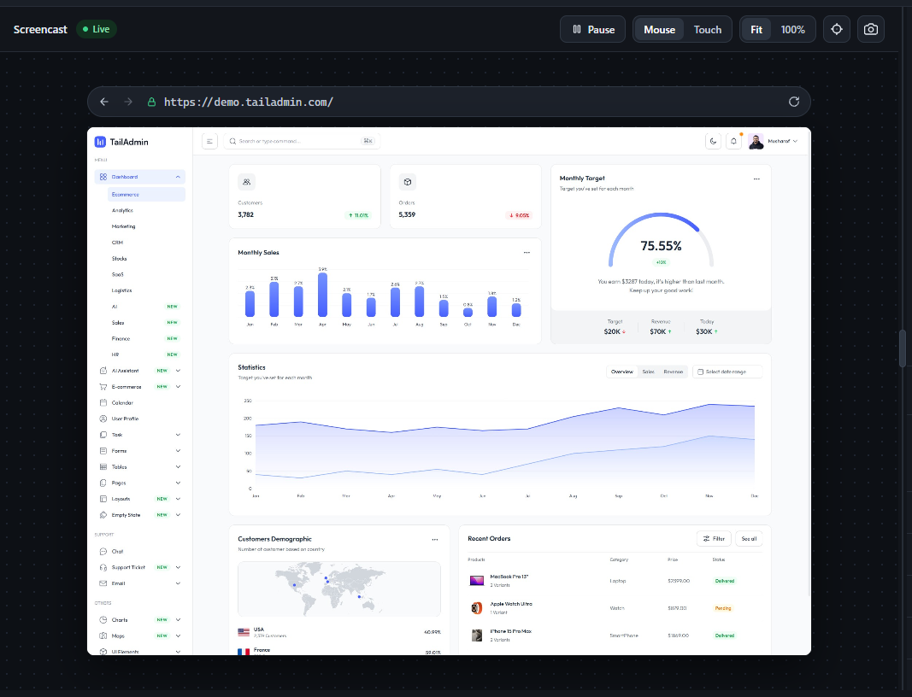
Message tab
The Message tab is a raw CDP command sender with full autocomplete over every method in the
protocol. Type a domain and method (e.g. Page.navigate), and the Method field
suggests matches with their domain and a deprecation badge where relevant; selecting one
pre-fills the Params box with a skeleton of its required parameters. A "CDP docs" link jumps to
that exact method's page in the official protocol reference.
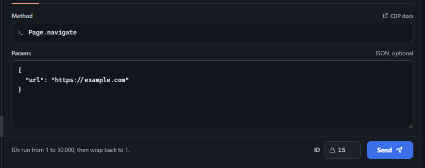
Every command sent and every event received is logged below, color-coded by direction (sent vs. received) and outcome (ok vs. error). Rows expand to show the full raw JSON, and the log supports search, a configurable retention limit, and exporting the whole history to a JSON file (Export logs). Screencast frames and raw input events are hidden from the log by default (toggle) to keep it readable.
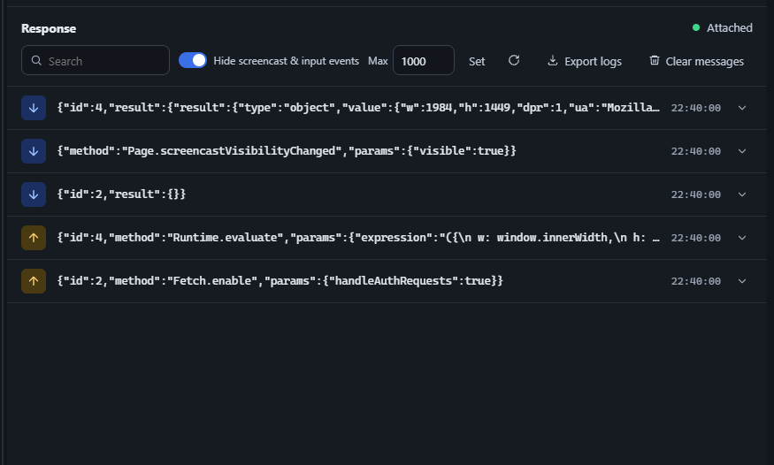
Presets tab
Presets wrap common CDP command sequences into one-click actions, so you don't have to hand-write the method and params yourself.
Custom HTTP headers
Apply extra headers to every subsequent request the page makes, via Network.setExtraHTTPHeaders.
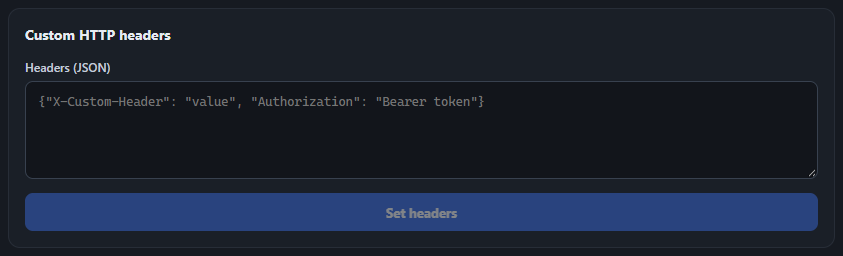
Capture screenshot
Grab a PNG, JPEG, or WebP screenshot of the current page, optionally capturing the full scrollable page rather than just the viewport.
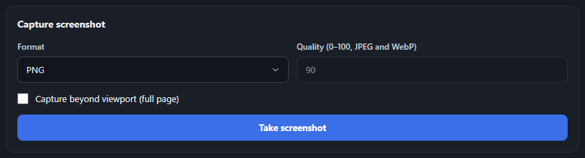
Device emulation
Switch between built-in device profiles (iPhone, iPad, Pixel, Desktop) or create and save your own custom profiles. See Device profiles below for the full create/edit flow.
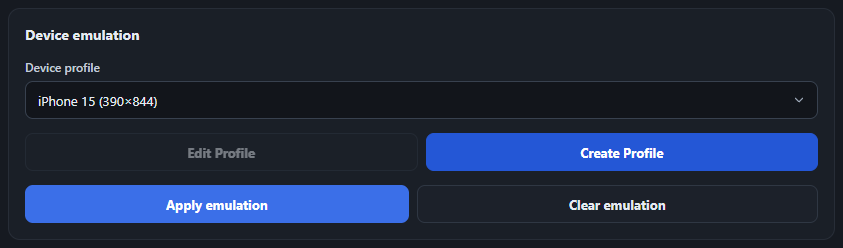
Location emulation
Override the page's geolocation with a specific latitude, longitude, and accuracy via
Emulation.setGeolocationOverride - useful for testing location-aware features
without physically moving. Fields are validated as you type (lat −90..90, long −180..180,
accuracy ≥0), but the red error state only appears after you've started editing, not on a
freshly-opened blank form. Clear location is always available once connected - it
sends Emulation.clearGeolocationOverride() to make the page fall back to real/normal
geolocation behavior, without resetting the fields you'd typed.
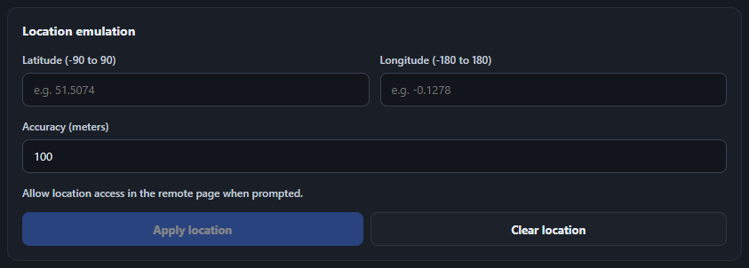
Execute JavaScript
Run arbitrary code on the attached page via Runtime.evaluate and see the return
value (or a thrown error) in the Result box.
-
"Wrap in async IIFE (try/catch)" (checked by default) wraps your code in an
async function with its own try/catch, so a plain
returnstatement works (e.g.return document.title;). A thrown error is logged to the page's own console and shown in the Result box. Return values are JSON-serialized: strings, booleans, finite numbers, plain objects/arrays (including nested), and DOM elements (shown as tag + attributes) come through; anything else - functions,Map/Set,NodeList,NaN/Infinity- comes back as the literal string"unparsable object". -
"Await promise" is force-checked and disabled whenever the IIFE wrap is on
(since the wrapper always returns a Promise). Uncheck the wrap option to make Await a free
toggle again - in that mode your code must be a bare expression, not a
returnstatement, and the result uses CDP's own formatting instead of the custom serializer.
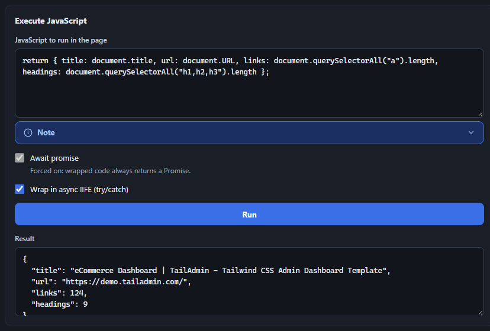
Device profiles
Beyond the built-in iPhone/iPad/Pixel/Desktop presets, you can create unlimited custom device profiles. Click Create Profile (or Edit Profile, enabled once at least one custom profile exists) to open the device profile dialog.
- Copy from seeds every field from an existing profile - including the special "Connected browser" entry, which reflects the real, live dimensions, pixel ratio, user agent, and touch/mobile capability of whatever page is currently attached (refreshed automatically on connect, on navigation, and after applying/clearing emulation).
- Width / Height / Device pixel ratio - numeric fields with sane bounds (1–10,000,000px, 0.1–10 DPR).
- Mobile mode / Touch emulation - independent checkboxes.
- Set user agent - when checked, reveals a required text field for a custom UA string; unchecked, the page's real UA is left alone.
- Profile names must be unique (case-insensitive) against both built-ins and your other custom profiles, up to 80 characters.
- Delete is only available while editing an existing custom profile (never for built-ins or "Connected browser").
Applying a profile sends Emulation.setDeviceMetricsOverride,
Emulation.setTouchEmulationEnabled, and (if set) Emulation.setUserAgentOverride
together; Clear reverses all three. Custom profiles are saved via chrome.storage.local
and sync live across every open inspector panel window.
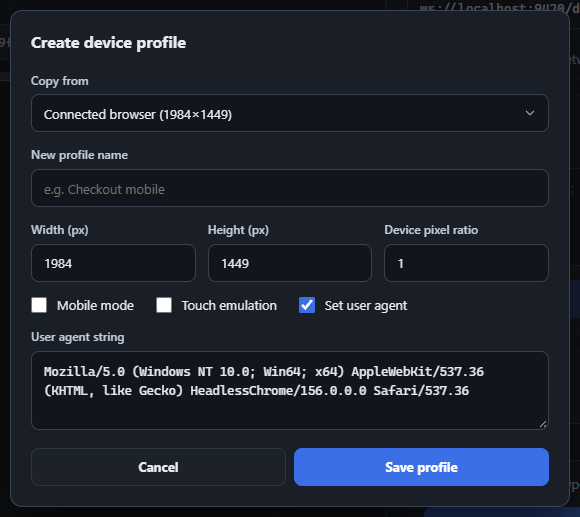
Network tab
The Network tab captures every HTTP(S) request the attached page makes and shows it as a row -
method, status, endpoint, resource type, size, start time, and duration - built live from CDP's
Network.requestWillBeSent, responseReceived,
loadingFinished, and loadingFailed events.
WebSocket connections and frames are deliberately excluded - this tab is for
REST/API/asset traffic.
Logging is off by default. Flip the switch at the top to send Network.enable and
start capturing; flipping it off sends Network.disable and marks any
still-in-flight request as canceled rather than leaving it stuck "pending" forever.

The request list
Once enabled, requests appear newest-first as they happen. The row shows the endpoint (path and query string) rather than the full URL, since every request to the same host would otherwise be indistinguishable - hover a row, or expand it, to see the full absolute URL. Use the search box to filter by URL or method, Export logs to save the captured list as JSON, and Clear requests to empty it.

Request detail
Click any row to expand it and see the full URL, status, timing, and complete request/response
headers - including headers only available via CDP's *ExtraInfo events (like the
real Cookie/Set-Cookie values, which are often missing from the
base events).

Dialogs & prompts
A few interactions on the remote page surface as dialogs in the inspector panel, since they can't be shown inside the screencast image itself:
JavaScript dialogs (alert / confirm / prompt / beforeunload)
When the page calls alert(), confirm(), prompt(), or
triggers a beforeunload warning, CDP Inspector intercepts it
(Page.javascriptDialogOpening) and shows its own dialog instead of letting it block
invisibly. prompt() gets a text field pre-filled with the page's default value; the
Cancel button is hidden for a plain alert (there's nothing to decline); and for
beforeunload the buttons relabel to "Leave"/"Stay". Screencast input is paused while
a dialog is open.
HTTP authentication
If the page hits a resource requiring HTTP Basic/Digest auth, a credentials dialog appears
(origin, scheme, and realm shown) backed by Fetch.continueWithAuth. Multiple
simultaneous challenges queue up and are shown one at a time. Credentials you enter are redacted
to [redacted] before being written into the visible Message log, so they're never
accidentally exposed there or in an exported log file.
Reconnection & error handling
-
A Live/Offline badge reflects both the WebSocket's own state and an independent
5-second poll of
/json/versionon the debugging port - so it catches the whole remote browser dying, not just this one tab's connection dropping. -
There's no automatic reconnect. If the WebSocket closes, all pending
request/response bookkeeping is cleared, open dialogs are force-closed, and the Network tab's
"enabled" state resets to off (since
Network.enabledoesn't survive a new CDP session) - you reconnect manually by reopening the tab card from the popup, or refreshing. - Navigation history lookups retry automatically (up to 3 times, backing off) if the page was just restored from the back/forward cache and briefly has no active document - back/forward buttons stay disabled while a retry is pending rather than appearing clickable and failing.
- Message/request IDs cycle from 1 to 50,000 and wrap around; if all 50,000 are genuinely still awaiting a response (essentially never in practice), new sends are blocked with a clear log message rather than silently colliding with an in-flight ID.
AI & automation use cases
Because every Chrome instance CDP Inspector launches is disposable and isolated - its own profile, its own debugging port, nothing shared with your real browser session - it's a safe sandbox to hand to an AI agent. The panel's header already generates the exact prompt an agent needs to connect directly to the same CDP WebSocket your screencast is using.
- Launch the throwaway Chrome from the popup's generated command (headless or not).
- Attach to the target tab and load the application URL - either open New tab and type the URL directly, or attach to a blank tab and navigate there from the screencast's address bar.
- Copy the AI prompt from the panel header - it already names the tab and its exact CDP WebSocket URL.
Then paste that prompt into your AI agent, followed by the task-specific instructions below.
Let an AI drive and debug a live app like a human
- Paste it into Claude Code (or any CDP-capable AI agent/MCP tool), followed by what you actually want done - reproduce a bug, click through a signup flow, check what a specific page state looks like. The agent connects to the same WebSocket your panel is using and can now: read the DOM, take its own screenshots, dispatch real mouse/keyboard input to click and type like a human (not just call JS functions), watch console logs and network traffic as it acts, and navigate between screens - a full interactive debugging loop.
- Keep your own inspector panel open on that tab in parallel: the Message and Network tabs update live as the agent acts, giving you a real-time audit trail of exactly what it did.
This turns the throwaway instance into observable "hands" for an agent to reproduce a bug, poke around a staging environment, or verify a fix interactively - without writing any Selenium/Playwright automation code, and without touching your real, logged-in browser.
Load an app, have AI analyze it, write the results to Excel
Turn a manual "open the app, click around, copy numbers into a spreadsheet" chore into a request. The target here is the internal dashboard, report, or page you need data from:
- Paste it into Claude Code (or any CDP-capable AI agent), followed by the specific task, e.g. "log in, open the Q3 report, apply the region filter, and extract the revenue-by-country table." If you'd rather pull the data from the app's own API responses than scraped HTML, turn on the Network tab first - every call the app makes while the agent works is captured alongside it.
- Ask the agent to return the data as structured JSON - either by reading the rendered DOM (e.g. a results table) via
Runtime.evaluate, or from the Network tab's captured responses (Export logs), which is often cleaner since it's already the app's own structured JSON rather than something scraped off the page. - Have the agent convert that JSON into rows and write an
.xlsxfile - e.g. withopenpyxl/pandasin Python, or an equivalent Node library.
Research products across sites, compare, and export to Excel
The same pattern works just as well for consumer research as it does for internal tools - for
example: "log into Amazon, search for gaming laptops currently on sale, and for each one
list the pros and cons, cross-checked against general user reviews from outside Amazon, in a
spreadsheet." The target tab here is amazon.com.
- Paste it into the AI agent with the research task: log in, search "gaming laptops", filter to the sale/deals section, and open each result. For every laptop, capture its title, price, discount, rating, and spec highlights from the listing and product page, then write a short pros/cons summary from that information.
- Ask the agent to go further than Amazon itself: search the open web (or specific sites like Reddit, RTings, Tom's Hardware) for independent reviews of each model, and note the general consensus alongside Amazon's own star rating - this is how you catch a laptop that's well-rated on-platform but poorly regarded everywhere else.
- Have the agent compile everything - name, price, Amazon rating, pros, cons, external review summary, and source links - into rows and write an
.xlsxfile.
More use cases
Visual regression checks
Use the screenshot preset before and after a deploy or code change, and diff the images - no separate headless-browser tooling to set up.
Responsive QA sweep
Cycle through device emulation profiles (or your own custom ones) and screenshot each, compiling a one-page visual report across breakpoints.
Geolocation-gated features
Test maps, store locators, or region-locked content with the Location preset, without physically traveling or spoofing your real machine's location.
Clean bug reproduction
Reproduce a user-reported issue in an isolated profile matching their exact conditions (headers, user agent, viewport) without touching your personal, logged-in browser.
Third-party API inspection
Use the Network tab's full headers (including real cookies via *ExtraInfo) to understand exactly what a third-party integration sends and returns before you write code against it.
Authenticated-flow testing
Pair the Custom HTTP headers preset (inject a bearer token) with the Network tab (confirm it's actually being sent and accepted) to validate auth flows end to end.
Remote CI triage
If your CI exposes the debugging port of its headless Chrome, attach the inspector panel from your machine and watch exactly what happened during a failing test run - no local repro needed.
Live walkthroughs
Keep the Network/Message tabs open while narrating (or having an AI narrate) what's happening on a customer's exact page state, for support or training.
Competitor price tracking
Point the AI at a list of competitor product pages on a schedule, have it extract price/stock/promo text each run, and append the results to a spreadsheet over time.
Job or listing aggregation
Search multiple job boards or marketplaces for the same query, have the AI read each listing's details, and compile a deduplicated shortlist with links.
Form-fill & checkout testing
Have the AI complete a multi-step signup or checkout flow end to end on a throwaway profile, watching the Network tab for failed or unexpected calls along the way.
Content/SEO audits
Crawl a set of your own pages, have the AI check titles, headings, and meta tags via Execute JavaScript, and export a pass/fail report per page.
Attach a Selenium or Playwright script to an already-running Chrome
Normally Selenium and Playwright each launch and own their own browser process. Both can instead attach to a browser that's already running via its remote-debugging port - exactly the kind of throwaway instance CDP Inspector's popup launches - and continue automating from whatever state that session is already in, instead of starting fresh.
This is useful when:
- You've manually navigated, logged in, or worked through a 2FA/captcha step by hand in the throwaway browser (via the inspector panel's screencast), and want a script to take over from there without re-authenticating.
- You're debugging a flaky automated test interactively: launch the same browser your test suite would use, drive it manually or with the Presets tab to a specific state, then attach a script to poke at it live.
- You want to watch, in CDP Inspector's screencast and Network tab, exactly what a Selenium/Playwright script is doing to a page in real time, side by side with the automation itself.
- Launch the throwaway Chrome from the popup's generated command and note its port (e.g.
9420). The command already includes--remote-allow-origins=*, which newer Chrome versions require for a script to attach this way. - Optionally, use the inspector panel to get the browser into whatever starting state you want first - navigate, log in, apply device/location emulation.
- Point your script at that port instead of letting it launch its own browser:
Selenium
Set the Chrome-specific debuggerAddress capability instead of letting Selenium launch a new browser:
## Python
from selenium import webdriver
from selenium.webdriver.chrome.options import Options
options = Options()
options.add_experimental_option("debuggerAddress", "localhost:9420")
driver = webdriver.Chrome(options=options)
driver.find_element("css selector", "#submit").click()// Java
ChromeOptions options = new ChromeOptions();
options.setExperimentalOption("debuggerAddress", "localhost:9420");
WebDriver driver = new ChromeDriver(options);
driver.findElement(By.cssSelector("#submit")).click();// Node.js (selenium-webdriver)
const { Builder } = require("selenium-webdriver");
const chrome = require("selenium-webdriver/chrome");
const options = new chrome.Options().debuggerAddress("localhost:9420");
const driver = await new Builder().forBrowser("chrome").setChromeOptions(options).build();
await driver.findElement({ css: "#submit" }).click();
driver is now attached to the live tab(s) in that instance - if more
than one is open, use driver.window_handles /
switch_to.window(...) (Python), the equivalent
getWindowHandles() (Java), or driver.getAllWindowHandles()
(Node) to pick the one you want.
Playwright
Playwright has a dedicated API for this - connect_over_cdp() - which
connects to the browser's CDP endpoint directly rather than the WebDriver layer Selenium uses:
# Python
from playwright.sync_api import sync_playwright
with sync_playwright() as p:
browser = p.chromium.connect_over_cdp("http://localhost:9420")
context = browser.contexts[0]
page = context.pages[0] # or context.new_page()
page.click("#submit")// Node.js
const { chromium } = require("playwright");
const browser = await chromium.connectOverCDP("http://localhost:9420");
const context = browser.contexts()[0];
const page = context.pages()[0];
await page.click("#submit");
Same idea as Selenium: context.pages() lists every tab already open in
that instance (including ones you navigated manually via the inspector panel), so you can pick
the right one instead of always taking the first.
A live CDP reference for Selenium & Playwright developers
Both Selenium and Playwright expose a raw CDP escape hatch for capabilities their high-level
APIs don't cover - Selenium 4's driver.execute_cdp_cmd(cmd, params) (Python) /
((HasCdp) driver).executeCdpCommand(...) (Java), and Playwright's
context.new_cdp_session(page).send(method, params). Neither ships a discoverable
reference for what you can actually call - you find out whether your method name and params
shape were right at runtime, inside your test.
CDP Inspector's Message tab is exactly that missing reference, live:
- Launch a throwaway Chrome via the popup (or point it at whatever Chrome your test suite already launches, if its debugging port is reachable).
- Open the page under test and attach the inspector panel.
- Type a domain prefix in the Method field -
Network.,Emulation.,Page.,Accessibility.,Animation.,CSS.- to browse every method in that domain, with an inline "CDP docs" link and a deprecation badge where relevant. - Select a method to get a pre-filled params skeleton; edit it and hit Send to see the exact live response shape, before writing a single line of driver code.
- Once it behaves the way you want, copy the method name and JSON params straight into
execute_cdp_cmd()/cdp_session.send().
Concrete gaps this is useful for - all testable live in the Message tab first:
Network.emulateNetworkConditions/Network.setExtraHTTPHeaders- throttling and header injection beyond what either framework wraps cleanly.Browser.setDownloadBehavior/Page.setDownloadBehavior- reliable, scriptable download-directory control.Emulation.setGeolocationOverride- Playwright wraps this ascontext.set_geolocation(), but Selenium users often need the raw call; the Location preset shows you exactly what it sends.Accessibility.*- a11y tree snapshots for accessibility-focused test assertions.Performance.*/Profiler.*- capturing perf traces as part of a test run.Security.*- handling certificate errors against self-signed staging environments.DOM.getBoxModel- precise element geometry beyond whatgetBoundingClientRect()gives you from page-side JS.
Keyboard shortcuts
| Shortcut | Action | Where |
|---|---|---|
| Enter | Connect / fetch tabs | Popup, port input |
| ↑ / ↓ | Move through recent-port suggestions | Popup, port input |
| Ctrl+R | Reconnect (re-run connect for the current port) | Popup |
| Enter | Create tab | Popup, New tab URL field |
| Enter | Navigate to URL | Inspector, screencast address bar |
| Escape | Revert to last known URL | Inspector, screencast address bar |
| ↑ / ↓ / Enter / Escape | Navigate / apply / close method suggestions | Inspector, Message tab method field |
| ← / → | Resize the split 2% at a time (when focused) | Inspector, split handle |
| Enter | Apply new message retention limit | Inspector, Max messages field |
| Escape | Decline / dismiss (accepts for a plain alert) | Inspector, JS dialog / auth dialog |
| any key, while hovered | Forwarded live to the remote page | Inspector, screencast |
Command-line flags explained
| Flag | Purpose |
|---|---|
| --user-data-dir | Separate profile directory, isolating the debugging instance from your normal browser |
| --remote-debugging-port | Enables remote debugging on the specified port |
| --remote-allow-origins | Allows all origins to connect to the debugging port |
| --disable-backgrounding-occluded-windows | Keeps background tabs active |
| --window-size | Sets the browser window size |
| --enable-automation | Enables automation features |
| --no-first-run | Skips first-run setup screens |
| --headless=new | Runs Chrome without a visible window (optional, toggled in the popup) |
What gets saved
Popup (via chrome.storage.local): the last generated command and
port, recent-ports history, headless/%random% toggle states, OS selection, custom Chromium
binary paths and arguments (per OS / per path), and whether you were connected (to auto-reconnect
next time you open the popup).
Inspector panel: only your custom device profiles
persist (also via chrome.storage.local, synced live across open panel windows).
Everything else - scale mode, mouse/touch mode, split position, message filters, the max-messages
limit, Network tab contents - lives only in memory for that tab and resets when you close or
reload it.
| Export | What it produces |
|---|---|
| Message tab → Export logs | Combined sent/received history (oldest-first) as cdp-messages-<time>.json |
| Network tab → Export logs | Captured requests - headers, redirects, timing, errors - as cdp-network-<time>.json |
| Screencast → screenshot button | The last received frame, saved as frame.jpg |
| Presets → Capture screenshot | A fresh Page.captureScreenshot call, PNG/JPEG/WebP |
Troubleshooting
Can't connect to the debugging port
- Confirm the Chrome instance launched from the generated command is still running.
- Double-check the port in the popup matches
--remote-debugging-portin the command you ran. - Only one process can bind a given port - generate a new one if it's already taken.
No tabs show up after Fetch tabs
- The tab list only includes
pageandiframetypes - background/service-worker targets are filtered out. - Open at least one regular tab in the remote instance (or use New tab), then fetch again.
New tab fails to create
- Check the inline error under the URL field - it surfaces either an extension error or whatever the remote instance's
/json/newendpoint reported. - Make sure the port is still valid (1–65535) and the remote instance is still reachable.
Network tab stays empty after enabling
- Make sure the attached page actually makes HTTP(S) requests after you flip the switch - requests that already completed before enabling won't appear retroactively.
- WebSocket traffic is intentionally excluded from this tab.
Execute JavaScript returns "unparsable object"
This is expected for values JSON can't represent cleanly - functions, Map/Set,
NodeList, NaN/Infinity. Convert the value to a plain
object/array/string before returning it.
Keyboard input isn't reaching the remote page
Make sure your mouse is actually hovering the screencast frame - keyboard forwarding is gated on hover, not on having clicked into it, and a green ring around the frame confirms it's active.